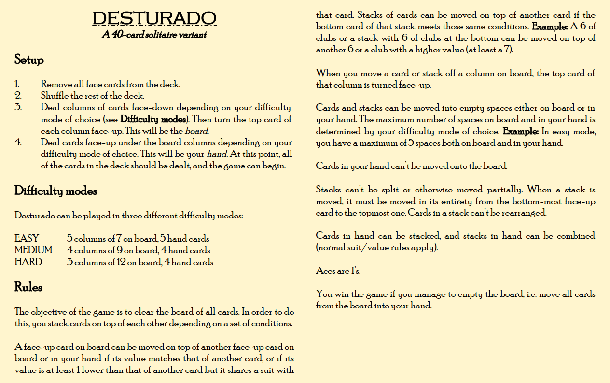

DOWNLOAD LINKS



| Status | Finished |
| Year | 2025 |
| Genre | Card game |
| Engine | N/A |
Desturado is a solo puzzle card game inspired by solitaire. Played with a 40-card deck (standard deck of cards, face
cards removed), the objective of the game is to stack cards on top of each other and clear the board.
Desturado's ruleset is simple enough to fit onto a single page of text - in fact, it's all contained in the preview image
above - but the strategy involved can make each game quite challenging and unpredictable. The game can be played on three
different difficulty modes.